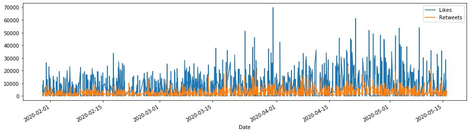
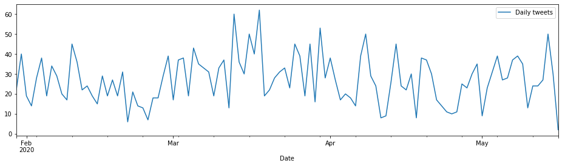
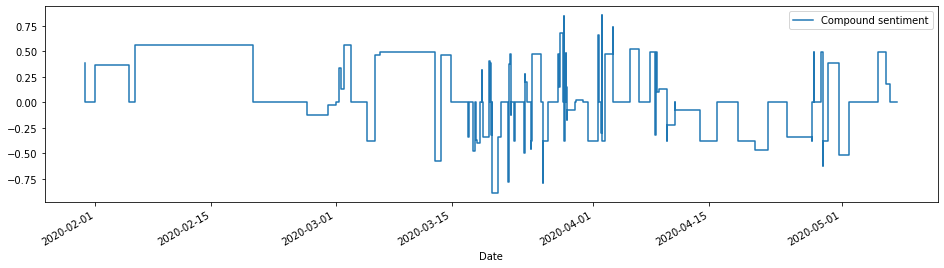

Twitter and DeepL
Sentiment analysis
Analysing Bolsonaro’s tweets during the Covid19 pandemic
Setup
# General:
import tweepy # To consume Twitter's API
import pandas as pd # To handle data
import numpy as np # For number computing
import json
import csv
# translations
import deepl
# For plotting and visualization:
from IPython.display import display
import matplotlib.pyplot as plt
import seaborn as sns
%matplotlib inline
Twitter access
# read json
with open('api_keys.json') as f:
credentials = json.load(f)
# API's setup:
def twitter_setup():
# Authentication and access using keys:
auth = tweepy.OAuthHandler(credentials['consumer_key'], credentials['consumer_secret'])
auth.set_access_token(credentials['access_token'], credentials['access_token_secret'])
# Return API with authentication:
api = tweepy.API(auth)
return api
Get recent tweets of Bolsonaro
def get_all_tweets(screen_name, credentials):
#Twitter only allows access to a users most recent 3240 tweets with this method
#authorize twitter, initialize tweepy
auth = tweepy.OAuthHandler(credentials['consumer_key'], credentials['consumer_secret'])
auth.set_access_token(credentials['access_token'], credentials['access_token_secret'])
api = tweepy.API(auth)
#initialize a list to hold all the tweepy Tweets
alltweets = []
#make initial request for most recent tweets (200 is the maximum allowed count)
new_tweets = api.user_timeline(screen_name = screen_name,count=200)
#save most recent tweets
alltweets.extend(new_tweets)
#save the id of the oldest tweet less one
oldest = alltweets[-1].id - 1
#keep grabbing tweets until there are no tweets left to grab
while len(new_tweets) > 0:
print(f"getting tweets before {oldest}")
#all subsiquent requests use the max_id param to prevent duplicates
new_tweets = api.user_timeline(screen_name = screen_name,count=200,max_id=oldest)
#save most recent tweets
alltweets.extend(new_tweets)
#update the id of the oldest tweet less one
oldest = alltweets[-1].id - 1
print(f"...{len(alltweets)} tweets downloaded so far")
return alltweets
# get tweets
# Jair
#alltweets = get_all_tweets("jairbolsonaro", credentials)
# get sons' tweets
# Flavio
#alltweets = get_all_tweets("FlavioBolsonaro", credentials)
# Carlos
#alltweets = get_all_tweets("CarlosBolsonaro", credentials)
# Eduardo
alltweets = get_all_tweets("BolsonaroSP", credentials)
getting tweets before 1259107396909219839
...399 tweets downloaded so far
getting tweets before 1256921349634822147
...599 tweets downloaded so far
getting tweets before 1253107691460886527
...799 tweets downloaded so far
getting tweets before 1250422025174171653
...997 tweets downloaded so far
getting tweets before 1247643770818039807
...1196 tweets downloaded so far
getting tweets before 1244772304640446463
...1395 tweets downloaded so far
getting tweets before 1242815692606451713
...1595 tweets downloaded so far
getting tweets before 1240322132091027456
...1793 tweets downloaded so far
getting tweets before 1238592246045454344
...1992 tweets downloaded so far
getting tweets before 1236135535988662272
...2189 tweets downloaded so far
getting tweets before 1234114139615879168
...2387 tweets downloaded so far
getting tweets before 1230336492654022655
...2587 tweets downloaded so far
getting tweets before 1227285030541631488
...2786 tweets downloaded so far
getting tweets before 1224711822189658118
...2985 tweets downloaded so far
getting tweets before 1221647265393082367
...3182 tweets downloaded so far
getting tweets before 1218929644621238280
...3196 tweets downloaded so far
getting tweets before 1218662810525339647
...3196 tweets downloaded so far
# save tweets in data frame
data = pd.DataFrame(data=[tweet.text for tweet in alltweets], columns=['Tweets'])
#data['Tweets_en'] = data['Tweets'].apply(translator.translate)
data['len'] = np.array([len(tweet.text) for tweet in alltweets])
data['ID'] = np.array([tweet.id for tweet in alltweets])
data['Date'] = np.array([tweet.created_at for tweet in alltweets])
data['Source'] = np.array([tweet.source for tweet in alltweets])
data['Likes'] = np.array([tweet.favorite_count for tweet in alltweets])
data['Retweets'] = np.array([tweet.retweet_count for tweet in alltweets])
data.head(10)
| Tweets | len | ID | Date | Source | Likes | Retweets | |
|---|---|---|---|---|---|---|---|
| 0 | Live com Vereador de Salvador-BA, Alexandre Al... | 140 | 1261469981503631360 | 2020-05-16 01:34:15 | Twitter for iPhone | 1364 | 229 |
| 1 | Hoje gravei a nova edição de O Brasil Precisa ... | 139 | 1261462877057118208 | 2020-05-16 01:06:01 | Twitter for iPhone | 4324 | 652 |
| 2 | RT @BolsonaroSP: Exemplo a ser seguido por com... | 140 | 1261432100651102208 | 2020-05-15 23:03:43 | Twitter for iPhone | 0 | 4053 |
| 3 | RT @BolsonaroSP: Hoje às 20:00h farei live com... | 140 | 1261432089502552064 | 2020-05-15 23:03:41 | Twitter for iPhone | 0 | 340 |
| 4 | RT @jairbolsonaro: -Palácio do Planalto (15/05... | 77 | 1261414590056771584 | 2020-05-15 21:54:08 | Twitter for iPhone | 0 | 5741 |
| 5 | Exemplo a ser seguido por comerciantes para pr... | 139 | 1261414438554472453 | 2020-05-15 21:53:32 | Twitter for iPhone | 12722 | 4053 |
| 6 | Hoje às 20:00h farei live com o Vereador de Sa... | 140 | 1261398834191663104 | 2020-05-15 20:51:32 | Twitter for iPhone | 1944 | 340 |
| 7 | @Dondiegolaveg4 @jairbolsonaro https://t.co/NQ... | 54 | 1261396631716495360 | 2020-05-15 20:42:47 | Twitter for iPhone | 371 | 67 |
| 8 | @GaloVeio_GW @Gilsonmirandaj @jairbolsonaro Kk... | 50 | 1261396533301444609 | 2020-05-15 20:42:23 | Twitter for iPhone | 2 | 0 |
| 9 | Hoje o Governo @JairBolsonaro completa 500 DIA... | 140 | 1261395598718259200 | 2020-05-15 20:38:40 | Twitter for iPhone | 28673 | 5626 |
# save tweets to csv
data.to_csv("Bolsonaro_Eduardo_tweets.csv",encoding='utf-8-sig')
Visualize tweets over time
# crop data for COVID timeframe
data = data.loc[data['Date'] > "2020-01-30 00:00:00"]
# Likes vs retweets visualization:
tfav = pd.Series(data=data['Likes'].values, index=data['Date'])
tret = pd.Series(data=data['Retweets'].values, index=data['Date'])
tfav.plot(figsize=(16,4), label="Likes", legend=True)
tret.plot(figsize=(16,4), label="Retweets", legend=True);

tweet_daily = pd.Series(data.groupby(pd.Grouper(key='Date', freq='D', convention='start')).size())
tweet_daily.plot(figsize=(16,4),label="Daily tweets", legend=True)
<matplotlib.axes._subplots.AxesSubplot at 0x21ceb1b1f48>

Pre-process tweets for topic/sentiment analysis
# Drop short tweets (likely URLs)
data = data.loc[data['len'] > 25]
# Drop URLs in Tweets
import re
for index, row in data.iterrows():
row["Tweets"] = re.sub(r'http\S+', '', row["Tweets"])
len(data)
2911
# Translate tweets
import requests
def translate(text_to_translate):
text = {
'auth_key': (None, '3387d291-62f1-85c6-e750-e008a06893bf'),
'text': (None, text_to_translate),
'target_lang': (None, 'EN')
}
response = requests.post('https://api.deepl.com/v2/translate', files=text)
translation_json = json.loads(response.text)
translation = translation_json['translations'][0]['text']
return translation
data["Tweets_en"] = data["Tweets"].apply(translate)
# Save translated tweets
data.to_csv("Bolsonaro_Eduardo_tweets_en.csv",encoding='utf-8-sig')
# read in translated tweets
data = pd.read_csv("Bolsonaro_Eduardo_tweets_en.csv",encoding='utf-8-sig')
#data['Date'] = pd.to_datetime(data['Date'], format='%d-%m-%Y %H:%M')
#data['Date'] = data['Date'].dt.strftime('%m/%d/%Y %H:%M')
#data = data.set_index('Date')
data.head(10)
| Unnamed: 0 | Tweets | len | ID | Date | Source | Likes | Retweets | Tweets_en | |
|---|---|---|---|---|---|---|---|---|---|
| 0 | 0 | Live com Vereador de Salvador-BA, Alexandre Al... | 140 | 1261469981503631360 | 2020-05-16 01:34:15 | Twitter for iPhone | 1364 | 229 | Live with Salvador-BA Councilman Alexandre All... |
| 1 | 1 | Hoje gravei a nova edição de O Brasil Precisa ... | 139 | 1261462877057118208 | 2020-05-16 01:06:01 | Twitter for iPhone | 4324 | 652 | Today I recorded the new edition of O Brasil P... |
| 2 | 2 | RT @BolsonaroSP: Exemplo a ser seguido por com... | 140 | 1261432100651102208 | 2020-05-15 23:03:43 | Twitter for iPhone | 0 | 4053 | RT @BolsonaroSP: Example to be followed by tra... |
| 3 | 3 | RT @BolsonaroSP: Hoje às 20:00h farei live com... | 140 | 1261432089502552064 | 2020-05-15 23:03:41 | Twitter for iPhone | 0 | 340 | RT @BolsonaroSP: Today at 8:00 pm I'll do live... |
| 4 | 4 | RT @jairbolsonaro: -Palácio do Planalto (15/05... | 77 | 1261414590056771584 | 2020-05-15 21:54:08 | Twitter for iPhone | 0 | 5741 | RT @jairbolsonaro: -Palácio do Planalto (15/0... |
| 5 | 5 | Exemplo a ser seguido por comerciantes para pr... | 139 | 1261414438554472453 | 2020-05-15 21:53:32 | Twitter for iPhone | 12722 | 4053 | Example to be followed by traders to press gov... |
| 6 | 6 | Hoje às 20:00h farei live com o Vereador de Sa... | 140 | 1261398834191663104 | 2020-05-15 20:51:32 | Twitter for iPhone | 1944 | 340 | Today at 8:00 pm I will live with the Councill... |
| 7 | 7 | @Dondiegolaveg4 @jairbolsonaro https://t.co/NQ... | 54 | 1261396631716495360 | 2020-05-15 20:42:47 | Twitter for iPhone | 371 | 67 | @Dondiegolaveg4 @jairbolsonaro https://t.co/NQ... |
| 8 | 8 | @GaloVeio_GW @Gilsonmirandaj @jairbolsonaro Kk... | 50 | 1261396533301444609 | 2020-05-15 20:42:23 | Twitter for iPhone | 2 | 0 | @GaloVeio_GW @Gilsonmirandaj @jairbolsonaro Kkkkk |
| 9 | 9 | Hoje o Governo @JairBolsonaro completa 500 DIA... | 140 | 1261395598718259200 | 2020-05-15 20:38:40 | Twitter for iPhone | 28673 | 5626 | Today the government @JairBolsonaro completes ... |
Tokenize and lemmatize tweets
# function to tokenize tweets
import spacy
import re
spacy.load('en_core_web_sm')
from spacy.lang.en import English
parser = English()
def tokenize(text):
lda_tokens = []
tokens = parser(text)
for token in tokens:
if token.orth_.isspace():
continue
elif token.like_url:
lda_tokens.append('URL')
elif token.orth_.startswith('@'):
lda_tokens.append('')
else:
lda_tokens.append(token.lower_)
return lda_tokens
# function to lemmatize tweets
import nltk
nltk.download('wordnet')
from nltk.corpus import wordnet as wn
def get_lemma(word):
lemma = wn.morphy(word)
if lemma is None:
return word
else:
return lemma
from nltk.stem.wordnet import WordNetLemmatizer
def get_lemma2(word):
return WordNetLemmatizer().lemmatize(word)
# look up stopwords
nltk.download('stopwords')
en_stop = set(nltk.corpus.stopwords.words('english'))
# Additional stop words to be removed from text
additional_stop_words=['twitter','com','pic','rt','via','youtube']
# function to clean tweets, i.e. tokenizing and lemmatizing
def prepare_text_for_lda(text):
tokens = tokenize(text)
tokens = [token for token in tokens if len(token) > 4]
tokens = [token for token in tokens if token not in en_stop]
tokens = [token for token in tokens if token not in additional_stop_words]
tokens = [get_lemma(token) for token in tokens]
return tokens
data["Tweets_processed"] = data["Tweets_en"].apply(prepare_text_for_lda)
[nltk_data] Downloading package wordnet to
[nltk_data] C:\Users\chris\AppData\Roaming\nltk_data...
[nltk_data] Package wordnet is already up-to-date!
[nltk_data] Downloading package stopwords to
[nltk_data] C:\Users\chris\AppData\Roaming\nltk_data...
[nltk_data] Package stopwords is already up-to-date!
data["Tweets_processed"][1:10]
1 [today, record, edition, brasil, precisa, sabe...
2 [example, follow, trader, pressure, governor, ...
3 [today, councillor, salvador, alexandre, alelu...
4 [-palã¡cio, planalto, 15/05, 17:40]
5 [example, follow, trader, press, governor, tra...
6 [today, councillor, salvador, alexandre, alelu...
7 []
8 [kkkkk]
9 [today, government, complete, first, brazil, w...
Name: Tweets_processed, dtype: object
# FIXME: Add bigrams
Filter topics related to Covid-19
keywords = ['covid-19','vocid-19', 'coronavirus', 'pandemic', 'hospital','emergency','distancing','social','distance','demonstration','test','equipment','health','measure']
covid_subsample = data[pd.DataFrame(data.Tweets_processed.tolist()).isin(keywords).any(1)]
covid_subsample["Tweets_processed"][1:5]
10 [difficulty, cause, pandemic, brazilian, agric...
16 [relative, need, hospital]
23 [relative, need, hospital]
26 [coronavirus, attack, lung, virus, attack, jou...
Name: Tweets_processed, dtype: object
len(covid_subsample)
356
LDA topic analysis
text_data = covid_subsample["Tweets_processed"]
from gensim import corpora
dictionary = corpora.Dictionary(text_data)
corpus = [dictionary.doc2bow(text) for text in text_data]
import pickle
pickle.dump(corpus, open('corpus.pkl', 'wb'))
dictionary.save('dictionary.gensim')
import gensim
NUM_TOPICS = 4
ldamodel = gensim.models.ldamodel.LdaModel(corpus, num_topics = NUM_TOPICS, id2word=dictionary, passes=15)
ldamodel.save('model5.gensim')
topics = ldamodel.print_topics(num_words=6)
for topic in topics:
print(topic)
(0, '0.024*"social" + 0.024*"coronavirus" + 0.019*"network" + 0.015*"test" + 0.013*"health" + 0.009*"emergency"')
(1, '0.018*"pandemic" + 0.018*"people" + 0.013*"covid-19" + 0.012*"government" + 0.012*"coronavirus" + 0.011*"measure"')
(2, '0.026*"covid-19" + 0.016*"coronavirus" + 0.015*"hydroxychloroquine" + 0.012*"doctor" + 0.010*"health" + 0.009*"demonstration"')
(3, '0.062*"coronavirus" + 0.022*"president" + 0.018*"health" + 0.018*"measure" + 0.017*"government" + 0.011*"fight"')
dictionary = gensim.corpora.Dictionary.load('dictionary.gensim')
corpus = pickle.load(open('corpus.pkl', 'rb'))
lda = gensim.models.ldamodel.LdaModel.load('model5.gensim')
import pyLDAvis.gensim
lda_display = pyLDAvis.gensim.prepare(lda, corpus, dictionary, sort_topics=False)
pyLDAvis.display(lda_display)
Sentiment analysis
from vaderSentiment.vaderSentiment import SentimentIntensityAnalyzer
analyser = SentimentIntensityAnalyzer()
def sentiment_analyzer_scores(sentence):
score = analyser.polarity_scores(sentence)
score = score['compound']
return score
covid_subsample["Sentiment"] = covid_subsample["Tweets_en"].apply(sentiment_analyzer_scores)
C:\ProgramData\Anaconda3\lib\site-packages\ipykernel_launcher.py:1: SettingWithCopyWarning:
A value is trying to be set on a copy of a slice from a DataFrame.
Try using .loc[row_indexer,col_indexer] = value instead
See the caveats in the documentation: https://pandas.pydata.org/pandas-docs/stable/user_guide/indexing.html#returning-a-view-versus-a-copy
"""Entry point for launching an IPython kernel.
idx = pd.date_range('01-30-2020', '05-07-2020')
covid_subsample.index = pd.DatetimeIndex(covid_subsample.Date)
covid_subsample = covid_subsample.reindex(idx, fill_value=0)
sent = pd.Series(data=covid_subsample['Sentiment'].values, index=covid_subsample['Date'])
sent.plot(figsize=(16,4), label="Compound sentiment", legend=True,drawstyle="steps")
<matplotlib.axes._subplots.AxesSubplot at 0x1ed00363408>
